RTR: Imperium Surrectum
RTR: Imperium SurrectumAll factions
← wiki index · factions overview · cultures · beliefs
230 playable factions, each with its own page, in 22 cultures.
Nine further factions in the mod files are not playable and are not part of that 230 — the rebel pool, the Roman senate, a test faction and the scripted breakaways. They hold territory and appear in recruitment gates, so they are documented together on factions you cannot play.
Culture is the game's own grouping, and it is not cosmetic: it settles which architecture a settlement is drawn with, which government levels the faction can install, and much of what the roster looks like. Factions in the same culture play more like each other than two neighbours in different ones do. Largest first within each.
Units is the faction's own roster — what it can raise from its own buildings anywhere it holds a settlement. It does not count regional units, which are gated on holding the right province rather than on being anyone in particular: every faction has between 424 and 443 of those, so the number tells you nothing about the faction. Each faction's page lists its own.
Jump to: Gallic 43 · Greek 37 · Germanic 16 · Celtiberian 11 · Roman 11 · Scythian 11 · Arab 10 · Brittonic 10 · Iberian 10 · Caucasian 9 · Illyrian 9 · Thracian 9 · Iranian 7 · Libyan 7 · Anatolian 5 · Dacian 5 · Eastern Hellenistic 5 · Phoenician 5 · Western Hellenistic 4 · Ethiopian 3 · Indian 2 · Egyptian 1
Gallic · 43 factions · 42 hold territory at the start
| Faction | Provinces | Characters | Units | Faction | Provinces | Characters | Units | Faction | Provinces | Characters | Units |
|---|---|---|---|---|---|---|---|---|---|---|---|
| 6 | 6 | 21 | 5 | 4 | 19 | 5 | 2 | 19 | |||
| 4 | 2 | 20 | 4 | 2 | 19 | 4 | 2 | 21 | |||
| 4 | 2 | 19 | 4 | 4 | 19 | 3 | 4 | 19 | |||
| 3 | 5 | 19 | 3 | 2 | 19 | 3 | 4 | 20 | |||
| 3 | 2 | 19 | 3 | 2 | 19 | 3 | 2 | 19 | |||
| 3 | 2 | 19 | 3 | 2 | 19 | 3 | 2 | 19 | |||
| 3 | 2 | 19 | 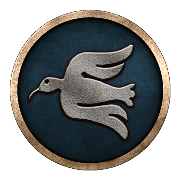 Veneti | 3 | 2 | 19 | 2 | 2 | 20 | ||
| 2 | 2 | 20 | 2 | 3 | 19 | 2 | 2 | 19 | |||
| 2 | 2 | 20 | 2 | 2 | 18 | 2 | 2 | 20 | |||
| 2 | 5 | 20 | 2 | 2 | 19 | 1 | 2 | 18 | |||
| 1 | 2 | 19 | 1 | 2 | 18 | 1 | 2 | 18 | |||
| 1 | 2 | 18 | 1 | 2 | 19 | 1 | 2 | 20 | |||
| 1 | 2 | 19 | 1 | 2 | 19 | 1 | 2 | 19 | |||
| 1 | 2 | 19 | 1 | 2 | 19 | 1 | 2 | 19 | |||
| 0 | 0 | 3 |
Greek · 37 factions · 34 hold territory at the start
| Faction | Provinces | Characters | Units | Faction | Provinces | Characters | Units | Faction | Provinces | Characters | Units |
|---|---|---|---|---|---|---|---|---|---|---|---|
| 6 | 7 | 17 | 5 | 8 | 16 | 4 | 6 | 15 | |||
| 4 | 6 | 17 | 3 | 5 | 14 | 3 | 4 | 21 | |||
| 3 | 5 | 20 | 3 | 4 | 17 | 3 | 4 | 15 | |||
| 3 | 4 | 12 | 3 | 4 | 16 | 3 | 5 | 16 | |||
| 3 | 5 | 16 | 2 | 3 | 15 | 2 | 4 | 13 | |||
| 2 | 3 | 15 | 2 | 2 | 17 | 2 | 4 | 17 | |||
| 2 | 4 | 14 | 2 | 4 | 15 | 2 | 4 | 17 | |||
| 1 | 3 | 13 | 1 | 3 | 16 | 1 | 3 | 14 | |||
| 1 | 3 | 15 | 1 | 4 | 14 | 1 | 5 | 21 | |||
| 1 | 1 | 15 | 1 | 3 | 15 | 1 | 3 | 15 | |||
| 1 | 4 | 16 | 1 | 4 | 15 | 1 | 2 | 17 | |||
| 1 | 3 | 12 | 0 | 0 | 3 | 0 | 0 | 16 | |||
| 0 | 0 | 16 |
Germanic · 16 factions · 15 hold territory at the start
| Faction | Provinces | Characters | Units | Faction | Provinces | Characters | Units | Faction | Provinces | Characters | Units |
|---|---|---|---|---|---|---|---|---|---|---|---|
| 5 | 3 | 18 | 3 | 3 | 17 | 3 | 2 | 17 | |||
| 2 | 2 | 17 | 1 | 2 | 18 | 1 | 2 | 17 | |||
| 1 | 3 | 16 | 1 | 2 | 17 | 1 | 2 | 17 | |||
| 1 | 2 | 17 | 1 | 2 | 17 | 1 | 2 | 17 | |||
| 1 | 3 | 17 | 1 | 2 | 18 | 1 | 2 | 4 | |||
| 0 | 0 | 3 |
Celtiberian · 11 factions · 11 hold territory at the start
What being Celtiberian decides
| Faction | Provinces | Characters | Units | Faction | Provinces | Characters | Units | Faction | Provinces | Characters | Units |
|---|---|---|---|---|---|---|---|---|---|---|---|
| 3 | 3 | 15 | 2 | 2 | 15 | 2 | 2 | 15 | |||
| 2 | 2 | 16 | 2 | 2 | 15 | 2 | 2 | 15 | |||
| 2 | 2 | 15 | 2 | 3 | 15 | 2 | 2 | 15 | |||
| 2 | 2 | 15 | 2 | 2 | 15 |
Roman · 11 factions · 10 hold territory at the start
| Faction | Provinces | Characters | Units | Faction | Provinces | Characters | Units | Faction | Provinces | Characters | Units |
|---|---|---|---|---|---|---|---|---|---|---|---|
| 26 | 30 | 24 | 2 | 2 | 12 | 2 | 2 | 13 | |||
| 2 | 2 | 12 | 2 | 2 | 11 | 1 | 2 | 11 | |||
| 1 | 2 | 11 | 1 | 2 | 10 | 1 | 2 | 11 | |||
| 1 | 2 | 13 | 0 | 0 | 4 |
Scythian · 11 factions · 10 hold territory at the start
| Faction | Provinces | Characters | Units | Faction | Provinces | Characters | Units | Faction | Provinces | Characters | Units |
|---|---|---|---|---|---|---|---|---|---|---|---|
| 4 | 2 | 10 | 4 | 2 | 11 | 2 | 2 | 12 | |||
| 2 | 2 | 12 | 2 | 4 | 10 | 2 | 3 | 12 | |||
| 1 | 2 | 10 | 1 | 2 | 12 | 1 | 2 | 10 | |||
| 1 | 2 | 12 | 0 | 0 | 3 |
Arab · 10 factions · 10 hold territory at the start
| Faction | Provinces | Characters | Units | Faction | Provinces | Characters | Units | Faction | Provinces | Characters | Units |
|---|---|---|---|---|---|---|---|---|---|---|---|
| 6 | 3 | 20 | 5 | 2 | 20 | 4 | 2 | 20 | |||
| 3 | 2 | 20 | 3 | 2 | 20 | 3 | 4 | 21 | |||
| 3 | 2 | 20 | 2 | 2 | 21 | 1 | 2 | 20 | |||
| 1 | 2 | 21 |
Brittonic · 10 factions · 10 hold territory at the start
| Faction | Provinces | Characters | Units | Faction | Provinces | Characters | Units | Faction | Provinces | Characters | Units |
|---|---|---|---|---|---|---|---|---|---|---|---|
| 4 | 2 | 13 | 4 | 2 | 13 | 3 | 2 | 13 | |||
| 3 | 2 | 13 | 2 | 2 | 13 | 2 | 2 | 13 | |||
| 2 | 2 | 13 | 2 | 3 | 13 | 1 | 2 | 13 | |||
| 1 | 2 | 13 |
Iberian · 10 factions · 10 hold territory at the start
| Faction | Provinces | Characters | Units | Faction | Provinces | Characters | Units | Faction | Provinces | Characters | Units |
|---|---|---|---|---|---|---|---|---|---|---|---|
| 2 | 2 | 15 | 2 | 2 | 15 | 2 | 2 | 16 | |||
| 1 | 2 | 15 | 1 | 2 | 15 | 1 | 2 | 15 | |||
| 1 | 2 | 15 | 1 | 3 | 15 | 1 | 2 | 15 | |||
| 1 | 2 | 15 |
Caucasian · 9 factions · 8 hold territory at the start
| Faction | Provinces | Characters | Units | Faction | Provinces | Characters | Units | Faction | Provinces | Characters | Units |
|---|---|---|---|---|---|---|---|---|---|---|---|
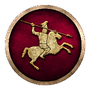 Armenia | 5 | 3 | 17 | 4 | 2 | 17 | 3 | 2 | 17 | ||
| 2 | 2 | 17 | 2 | 2 | 17 | 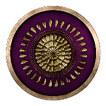 Iberians | 2 | 2 | 17 | ||
| 1 | 2 | 17 | 1 | 2 | 17 | 0 | 0 | 17 |
Illyrian · 9 factions · 9 hold territory at the start
| Faction | Provinces | Characters | Units | Faction | Provinces | Characters | Units | Faction | Provinces | Characters | Units |
|---|---|---|---|---|---|---|---|---|---|---|---|
| 5 | 6 | 15 | 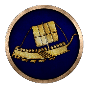 Liburni | 4 | 5 | 16 | 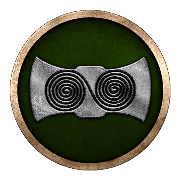 Dardania | 3 | 5 | 13 | |
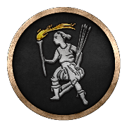 Ardiaei | 2 | 5 | 15 | 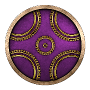 Delmatae | 2 | 3 | 15 | 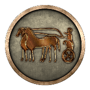 Histri | 2 | 3 | 14 |
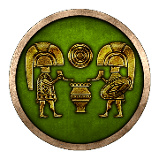 Iapodes | 2 | 3 | 15 | 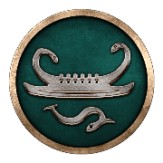 Labeatae | 2 | 3 | 17 | 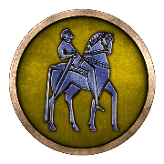 Daesitiates | 1 | 4 | 14 |
Thracian · 9 factions · 9 hold territory at the start
| Faction | Provinces | Characters | Units | Faction | Provinces | Characters | Units | Faction | Provinces | Characters | Units |
|---|---|---|---|---|---|---|---|---|---|---|---|
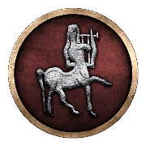 Bithynia | 2 | 2 | 18 | 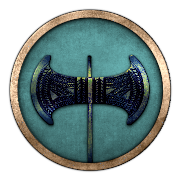 Odrysian Kingdom | 2 | 6 | 15 | 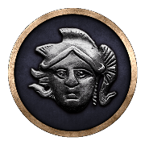 Paeonia | 2 | 2 | 16 |
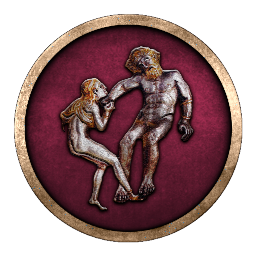 Triballi | 2 | 4 | 15 | 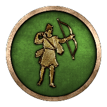 Asti | 1 | 1 | 15 | 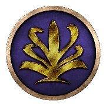 Bessi | 1 | 3 | 14 |
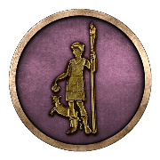 Cabyle | 1 | 2 | 17 | 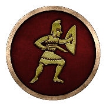 Dentheletae | 1 | 2 | 14 | 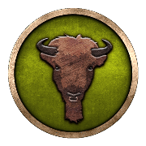 Maedi | 1 | 2 | 14 |
Iranian · 7 factions · 6 hold territory at the start
| Faction | Provinces | Characters | Units | Faction | Provinces | Characters | Units | Faction | Provinces | Characters | Units |
|---|---|---|---|---|---|---|---|---|---|---|---|
| 6 | 6 | 14 | 5 | 6 | 20 | 4 | 3 | 15 | |||
| 3 | 3 | 15 | 2 | 2 | 15 | 1 | 3 | 16 | |||
| 0 | 0 | 15 |
Libyan · 7 factions · 6 hold territory at the start
| Faction | Provinces | Characters | Units | Faction | Provinces | Characters | Units | Faction | Provinces | Characters | Units |
|---|---|---|---|---|---|---|---|---|---|---|---|
| 3 | 2 | 12 | 2 | 3 | 12 | 2 | 3 | 12 | |||
| 2 | 2 | 12 | 2 | 2 | 12 | 1 | 2 | 12 | |||
| 0 | 0 | 12 |
Anatolian · 5 factions · 2 hold territory at the start
| Faction | Provinces | Characters | Units | Faction | Provinces | Characters | Units | Faction | Provinces | Characters | Units |
|---|---|---|---|---|---|---|---|---|---|---|---|
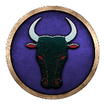 Paphlagonia | 1 | 2 | 11 | 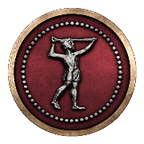 Selge | 1 | 2 | 14 | 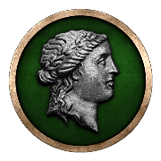 Chrysaorian League | 0 | 0 | 16 |
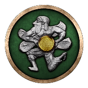 Cilician Pirates | 0 | 0 | 12 | 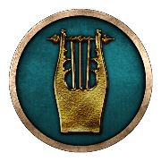 Lycian League | 0 | 0 | 16 |
Dacian · 5 factions · 5 hold territory at the start
| Faction | Provinces | Characters | Units | Faction | Provinces | Characters | Units | Faction | Provinces | Characters | Units |
|---|---|---|---|---|---|---|---|---|---|---|---|
| 3 | 2 | 14 | 2 | 2 | 14 | 2 | 3 | 14 | |||
| 1 | 2 | 14 | 1 | 2 | 14 |
Eastern Hellenistic · 5 factions · 4 hold territory at the start
What being Eastern Hellenistic decides
| Faction | Provinces | Characters | Units | Faction | Provinces | Characters | Units | Faction | Provinces | Characters | Units |
|---|---|---|---|---|---|---|---|---|---|---|---|
| 115 | 119 | 27 | 84 | 90 | 28 | 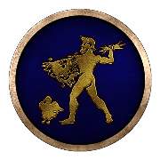 Bactria | 12 | 12 | 20 | ||
| 7 | 8 | 19 | 0 | 0 | 15 |
Phoenician · 5 factions · 5 hold territory at the start
| Faction | Provinces | Characters | Units | Faction | Provinces | Characters | Units | Faction | Provinces | Characters | Units |
|---|---|---|---|---|---|---|---|---|---|---|---|
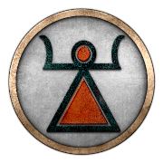 Carthage | 41 | 44 | 20 | 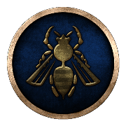 Arados | 1 | 2 | 15 | 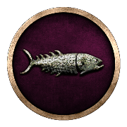 Gades | 1 | 2 | 20 |
| 1 | 2 | 15 | 1 | 2 | 15 |
Western Hellenistic · 4 factions · 4 hold territory at the start
What being Western Hellenistic decides
| Faction | Provinces | Characters | Units | Faction | Provinces | Characters | Units | Faction | Provinces | Characters | Units |
|---|---|---|---|---|---|---|---|---|---|---|---|
| 34 | 35 | 24 | 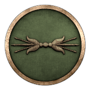 Epirus | 9 | 10 | 21 | 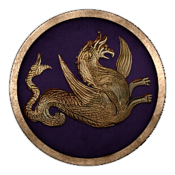 Bosporans | 8 | 9 | 24 | |
| 2 | 4 | 21 |
Ethiopian · 3 factions · 3 hold territory at the start
| Faction | Provinces | Characters | Units | Faction | Provinces | Characters | Units | Faction | Provinces | Characters | Units |
|---|---|---|---|---|---|---|---|---|---|---|---|
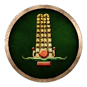 Kush | 8 | 4 | 11 | 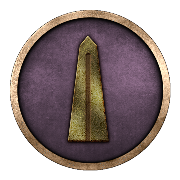 Axum | 1 | 2 | 11 | 1 | 2 | 11 |
Indian · 2 factions · 2 hold territory at the start
| Faction | Provinces | Characters | Units | Faction | Provinces | Characters | Units | ||||
|---|---|---|---|---|---|---|---|---|---|---|---|
| 15 | 1 | 16 | 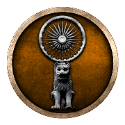 Maurya Empire | 6 | 1 | 16 |
Egyptian · 1 faction · 0 hold territory at the start
| Faction | Provinces | Characters | Units | ||||||||
|---|---|---|---|---|---|---|---|---|---|---|---|
| 0 | 0 | 16 |